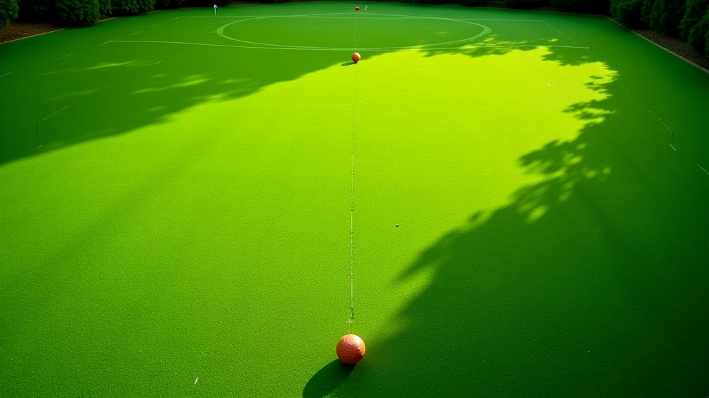
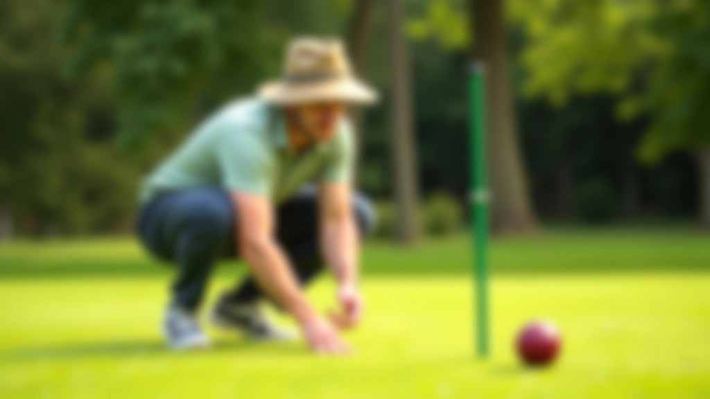
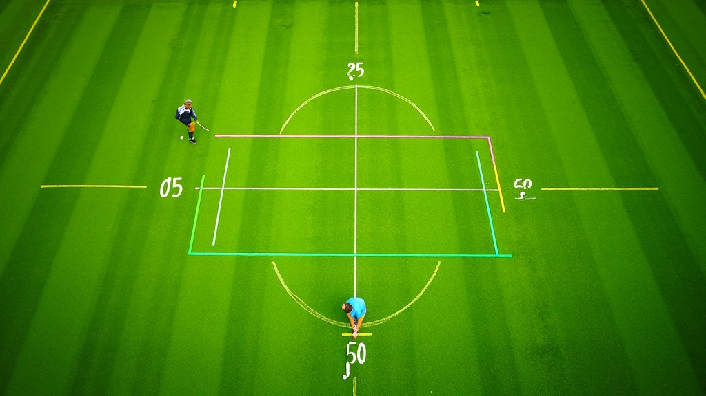
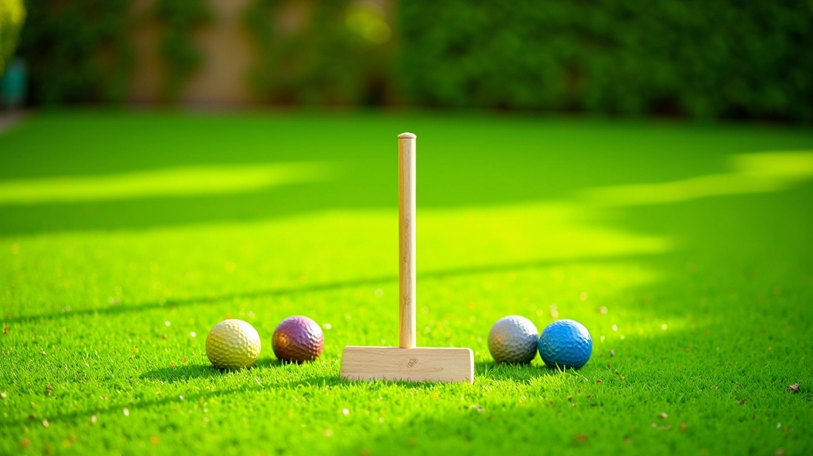
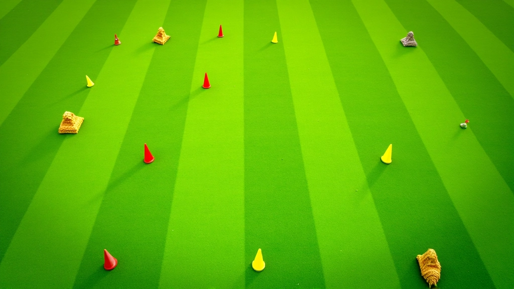

أساسيات ضربة الاقتراب من الطوق للمبتدئين
شرح تفصيلي للحركات الأساسية والموقف الصحيح والقوة المناسبة لتنفيذ ضربة فعالة من البداية.
اقرأ المقال
تقنيات عملية لتقدير المسافات وحساب الزوايا الصحيحة قبل تنفيذ الضربة بدقة عالية. اكتشف كيف تصبح قراءة الملعب مهارة يومية تحسّن أدائك بشكل ملموس.

كتبها فريق تحرير استراتيجية الكروكيه، المتخصص في تقديم إرشادات عملية وسهلة المتابعة.
الفرق بين لاعب محترف وآخر مبتدئ ليس فقط في القوة أو السرعة. إنه في الذكاء التكتيكي. عندما تقف أمام الطوق، لا تفكر فقط في كيفية ضرب الكرة. تفكر في الزاوية، والمسافة، والسطح، والرياح. هذا هو الفرق الحقيقي.
قراءة الملعب ليست موهبة طبيعية فحسب. إنها مهارة تُتعلم وتُتطور مع الممارسة المنتظمة. كل مرة تلعب، يجب أن تراقب. تتعلم من أخطائك. تختبر نظريات جديدة. هذا المسار يقودك إلى التحسن الحقيقي.
اللاعبون الذين يستثمرون الوقت في فهم هندسة الملعب يرتقون بسرعة أكبر من أقرانهم.

الزاوية المثالية للاقتراب من الطوق ليست عشوائية. إنها رياضيات بسيطة لكن فعّالة. عندما تقترب من الطوق، يجب أن تدخل بزاوية 45 درجة تقريباً. لماذا؟ لأن هذه الزاوية توفر لك أقصى مرونة في التحكم بالكرة.
لكن الواقع أكثر تعقيداً قليلاً. الزاوية تختلف حسب موقعك على الملعب. إذا كنت قريباً جداً من الطوق، قد تحتاج زاوية أكثر حدة. إذا كنت بعيداً، فالزاوية الأعرض أفضل. الخبرة تعلمك هذه الفروقات.

المسافة تحدد كل شيء في ضربة الاقتراب من الطوق. إذا كنت على بعد متر واحد من الطوق، ستحتاج قوة مختلفة تماماً عن كونك على بعد خمسة أمتار. المشكلة أن معظم اللاعبين يقدرون المسافة بالعين فقط. وهذا خطأ شائع جداً.
الطريقة الأفضل؟ استخدم خطواتك كوحدة قياس. عندما تتدرب، احسب المسافة بالخطوات. خطوة واحدة ثابتة تساوي حوالي 60 سنتيمتراً. بهذه الطريقة، تطور ذاكرة عضلية. بعد أسابيع، ستقدّر المسافات دون أن تعد خطواتك.
تعمّق أكثر في مهارات ضربة الاقتراب من الطوق
شرح تفصيلي للحركات الأساسية والموقف الصحيح والقوة المناسبة لتنفيذ ضربة فعالة من البداية.
اقرأ المقال
كيفية حساب القوة المطلوبة لكل مسافة مختلفة، والأخطاء الشائعة التي يرتكبها اللاعبون.
اقرأ المقالبرنامج تدريبي منظم يتضمن تمارين تدريجية وتحديات عملية لتحسين دقتك وثقتك في اللعب.
اقرأ المقالالنظرية رائعة، لكن التطبيق هو ما يصنع الفرق. إذا أردت فعلاً تحسين مهارة قراءة الملعب، جرب هذا البرنامج البسيط:

هذا المقال يقدم معلومات تعليمية عن تقنيات قراءة الملعب في الكروكيه. كل لاعب مختلف، والظروف على الملعب تتغير باستمرار. النصائح المقدمة هنا مبنية على ممارسات شائعة وتجارب اللاعبين. ننصحك بالتدريب المنتظم والحصول على إرشادات مباشرة من مدرب متخصص لتحسين مهاراتك بشكل آمن وفعال.
قراءة الملعب ليست سحر. إنها مهارة قابلة للتطور مثل أي مهارة أخرى. تحتاج إلى فهم الزوايا والمسافات، والممارسة المنتظمة، والاستعداد للتعلم من أخطائك. كل مرة تلعب فيها، أنت تتحسن. كل ضربة تنفذها هي درس.
ابدأ بسيط. لا تحاول إتقان كل شيء في يوم واحد. ركز على فهم الزوايا أولاً، ثم أضف المسافات. بعد بضعة أسابيع من التدريب المنتظم، ستلاحظ تحسناً واضحاً في دقتك وثقتك. وهذا هو الهدف الحقيقي.